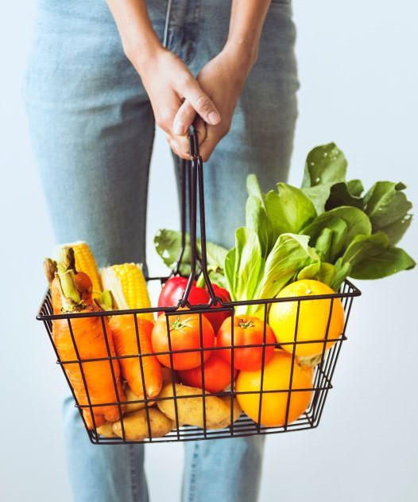
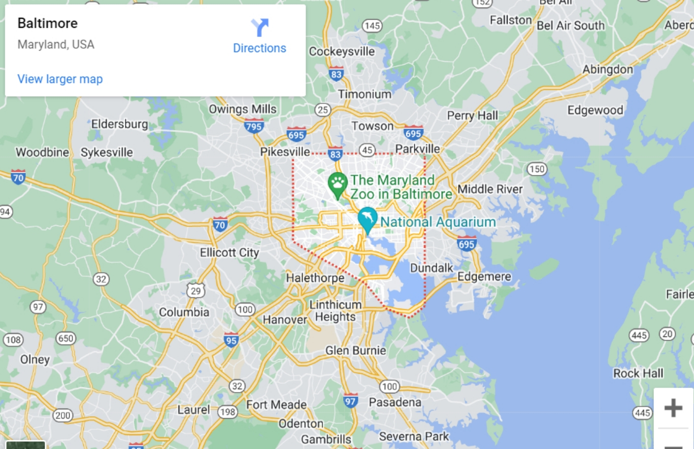

ORGANIC
ORGANIC
Fresh Food
organic
how your food is grown or raised can have a majiroty imapact on metal and enitinal health as well as the environment.

How it Works?
Organic agriculture , which isgoverened by strict government standards , requires that productsOrganic agriculture , which isgoverened by strict government standards , requires that productsOrganic agriculture , which isgoverened by strict government standards , requires that productswhich isgoverened by strict government standards , requires that productsOrganic agriculture , which isgoverened by strict government standards , requires that productsOrganic agriculture.

Oraganic Farming
organic forming prctice reducepollution ,conservewate,reduce soil,erosion
Oraganic Farming
organic forming prctice reducepollution ,conservewate,reduce soil,erosion
Oraganic Farming
organic forming prctice reducepollution ,conservewate,reduce soil,erosion
Fresh Food
organic
how your food is grown or raised can have a majiroty imapact on metal and enitinal health as well as the environment. we bring season best organic products and hand crafted from products converting to your door
About Our Form
In my form there is a pure vegetabkes and we have baby goats in my form In my form there are so many vegetabkes and we have baby goats in my form.
Vegetables
fresh vegetables are very important for healthay life.Vegetables
fresh vegetables are very important for healthay life.animals
fresh vegetables are very important for healthay life.Vegetables
fresh vegetables are very important for healthay life.
Fresh Food
Happy Animals
how your food is grown or raised can have a majiroty imapact on metal and enitinal health as well as the environmenthow your food is grown or raised can have a majiroty imapact on metal and enitinal health as well as the environment.
how your food is grown or raised can have a majiroty imapact on metal and enitinal health as well as the environmenthow your food is grown or raised can have a majiroty imapact on metal

how your food is grown or raised can have a majiroty imapact on metal and enitinal health as well as the environmenthow your food is grown or raised can have a majiroty imapact on metal

how your food is grown or raised can have a majiroty imapact on metal and enitinal health as well as the environmenthow your food is grown or raised can have a majiroty imapact on metal
Fresh Food
Happy Animals
how your food is grown or raised can have a majiroty imapact on metal and enitinal health as well as the environmenthow your food is grown or raised can have a majiroty imapact on metal and enitinal health as well as the environment.

